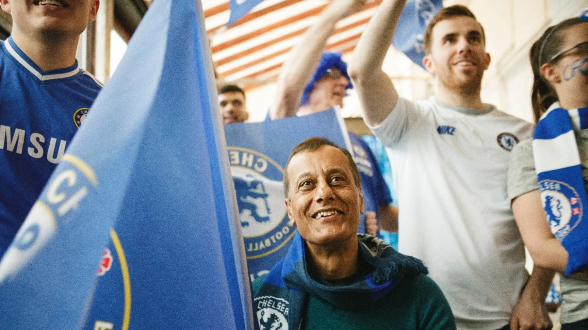
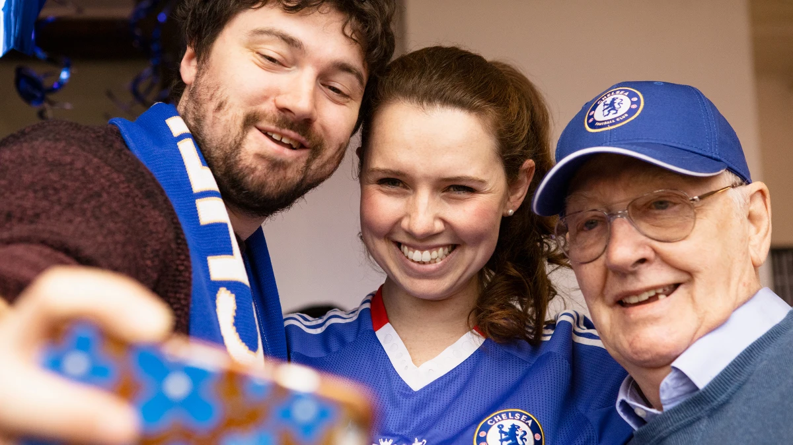
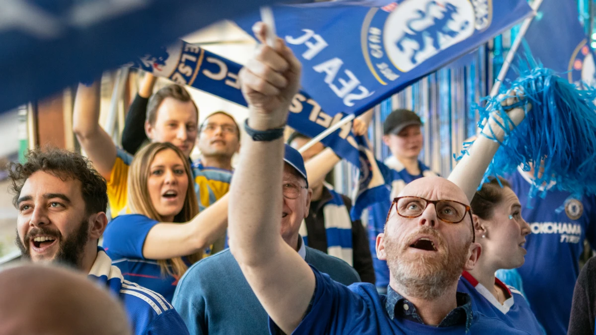
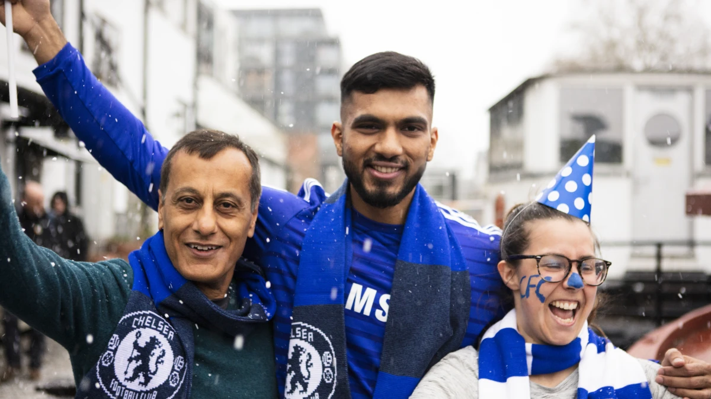

TRANG CHỦ
GIỚI THIỆU
LỊCH SỬ
THÀNH TÍCH
NGƯỜI HÂM MỘ
TRANG CHỦ
GIỚI THIỆU
LỊCH SỬ
THÀNH TÍCH
NGƯỜI HÂM MỘ

Hiện tại, chúng tôi đang thực hiện một số cải tiến cho các khu vực Câu lạc bộ người ủng hộ chính thức của trang web và ứng dụng The 5th Stand. Cho đến khi các bản cập nhật này hoàn tất, chúng tôi chỉ có thể cung cấp một số chức năng hạn chế của chương trình. Trong thời gian này, người hâm mộ sẽ không thể bắt đầu hoặc tham gia Câu lạc bộ người ủng hộ chính thức. Chúng tôi mong đợi nhiều nâng cấp mới sẽ được hoàn thành khi chúng tôi quay trở lại. Vui lòng kiểm tra lại ở đây sau!

Câu lạc bộ Người hâm mộ chính thức của chúng tôi là nhóm gồm 20 người hâm mộ có cùng chí hướng trở lên, tụ họp lại để xem và ủng hộ Chelsea, bất kể họ ở đâu trên thế giới. Chúng tôi giúp Câu lạc bộ Người hâm mộ chính thức của mình bằng cách cho phép, công nhận và khen thưởng họ. Thông tin chi tiết hơn về chương trình Phần thưởng sẽ được công bố trong thời gian tới.
Chúng tôi hiện đang thực hiện một số nâng cấp cho chương trình, giúp bạn dễ dàng hơn bao giờ hết trong việc thành lập câu lạc bộ của riêng mình và tham gia cộng đồng toàn cầu của chúng tôi. Thành lập một câu lạc bộ tại địa phương của bạn là một cách tuyệt vời để thể hiện sự ủng hộ của bạn dành cho Chelsea.
Hiện chúng tôi có hơn 500 Câu lạc bộ cổ động viên chính thức có trụ sở tại hơn 100 quốc gia trên toàn thế giới - và chúng tôi rất mong sớm được chào đón thêm nhiều câu lạc bộ hơn nữa vào cộng đồng toàn cầu của mình!Những cải tiến mới cho chương trình Official Supporters Clubs sẽ thưởng tốt hơn cho những câu lạc bộ ủng hộ tích cực nhất trong mạng lưới của chúng tôi, những câu lạc bộ tổ chức sự kiện tại khu vực địa phương của họ. Chúng tôi cũng hướng đến mục tiêu tăng cơ hội được khen thưởng và công nhận cho sự ủng hộ tận tụy của bạn. Những cải tiến trên trang web và ứng dụng The 5th Stand sẽ cho phép bạn làm nhiều việc hơn với Câu lạc bộ người hâm mộ chính thức của mình trên nền tảng số hơn bao giờ hết. Chúng tôi tiếp tục phát triển chương trình Official Supporters Club, nhằm mục đích phát triển và cải thiện trải nghiệm cho người hâm mộ trên toàn thế giới. Chúng tôi luôn lắng nghe mọi phản hồi của bạn (bạn có thể gửi qua email ) để giúp đưa ra quyết định.